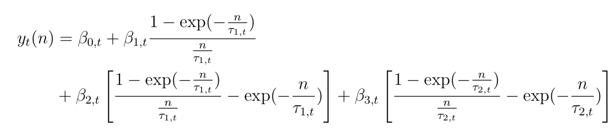
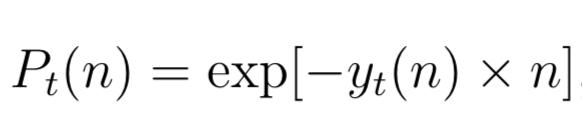
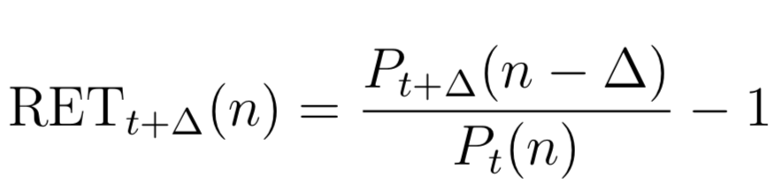
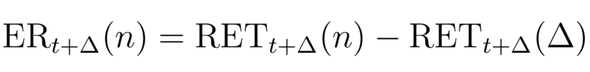
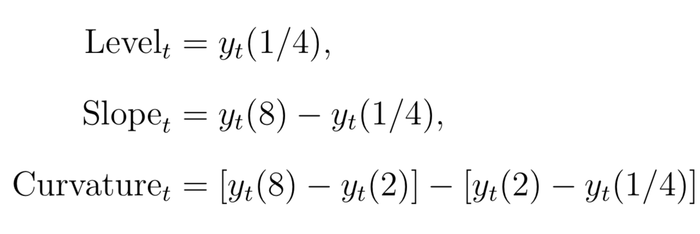

Chapter 3 Fixed Income Features Calculations
In this chapter, I will construct spot rates, zero coupon bond prices, excess returns, and yield factors. These features will be used later in hedging strategies and for general exploration of the data.
The following packages are required in this chapter.
3.1 Spot Rates
Script) 04-spot-rates-and-prices.R
Spot rates series can be constructed from the 6 parameters in the rates dataset. The following formula is used to construct the spot rates. It is integrated form of the Svensson extension of the Nelson and Siegal approach to calculating instantaneous forward rates. Svensson added a second hump term to the model that Nelson and Siegal created. Integrating the instantaneous forward rates gives us the spot rates.

To reconstruct this, I used a programming concept known as a function factory.
This is a specialized function that returns a function. This extends naturally
to this use case because the outer function can accept the time series of the
6 parameters, and the inner function that get’s returned is parameterized by
n, corresponding to the n-year spot rate at time t. The spot_rate_factory()
function lives in ratekit, and looks like this.
## function(beta_0, beta_1, beta_2, beta_3, tau_1, tau_2) {
##
## # Spot rate function based on Equation 22 of
## # Gurkaynak, Sack and Wright (2006)
## spot_rate_n <- function(n) {
##
## spot_rate_percentage <-
## beta_0 +
## beta_1 * (1 - exp( -n / tau_1)) / (n / tau_1) +
## beta_2 * ((1 - exp( -n / tau_1)) / (n / tau_1) - exp( -n / tau_1)) +
## beta_3 * ((1 - exp( -n / tau_2)) / (n / tau_2) - exp( -n / tau_2))
##
## spot_rate_percentage / 100
## }
##
##
## spot_rate_n
## }
## <environment: namespace:ratekit>As you can see, it accepts the 6 parameters, and returns a function parameterized
by n. Because we want to calculate the spot rate for a number of different
years, this parameterized function will be very useful. Below is an example
usage of this concept.
# The monthly parameters from the Data chapter
parameters_monthly <- read_rds("data/cleaned/parameters/parameters_monthly.rds")
# The generated function. The function signature is generate_spot_rates(n)
generate_spot_rates <- with(
data = parameters_monthly,
expr = spot_rate_factory(BETA0, BETA1, BETA2, BETA3, TAU1, TAU2)
)
# Calculate the series of 1/12 year, 11/12 year, and 1 year spot rates
spot_rates <- parameters_monthly %>%
select(date) %>%
mutate(
spot_1_month = generate_spot_rates(1/12),
spot_11_month = generate_spot_rates(11/12),
spot_12_month = generate_spot_rates(1)
)
spot_rates## # A time tibble: 459 x 4
## # Index: date
## date spot_1_month spot_11_month spot_12_month
## <date> <dbl> <dbl> <dbl>
## 1 1980-01-31 0.126 0.118 0.118
## 2 1980-02-29 0.136 0.145 0.145
## 3 1980-03-31 0.161 0.152 0.151
## 4 1980-04-30 0.116 0.107 0.107
## 5 1980-05-30 0.0795 0.0867 0.0871
## # ... with 454 more rows3.2 Zero Coupon Bond Prices
Script) 04-spot-rates-and-prices.R
n-year zero coupon bond prices can be calculated easily from their corresponding spot rates. Below is the relationship between the two.

Like for the spot rates, a function factory was constructed that accepted the
spot rate function, and returned a function that calculates a vector of bond
prices parameterized by n.
## function(spot_rate_fn) {
##
## # Zero coupon bond for 1 dollar is just discounted spot rate
## zero_bond_price_fn <- function(n) {
## exp( - spot_rate_fn(n) * n)
## }
##
## zero_bond_price_fn
## }
## <environment: namespace:ratekit>Using this relationship, the zero coupon bond prices were computed as the following:
generate_zero_prices <- zero_bond_price_factory(generate_spot_rates)
zero_prices <- spot_rates %>%
transmute(
date,
zero_prices_1_month = generate_zero_prices(1/12),
zero_prices_11_month = generate_zero_prices(11/12),
zero_prices_12_month = generate_zero_prices(1)
)
zero_prices## # A time tibble: 459 x 4
## # Index: date
## date zero_prices_1_month zero_prices_11_month zero_prices_12_month
## <date> <dbl> <dbl> <dbl>
## 1 1980-01-31 0.990 0.897 0.889
## 2 1980-02-29 0.989 0.875 0.865
## 3 1980-03-31 0.987 0.870 0.860
## 4 1980-04-30 0.990 0.906 0.899
## 5 1980-05-30 0.993 0.924 0.917
## # ... with 454 more rows3.3 One Month Returns
Script) 05-returns.R
The time \(t+\Delta\) return on a n-year bond is:

Using the zero bond prices from before, it is easy to calculate returns. For example, 1 month returns for 1 year zero coupon bonds can be calculated as:
returns <- zero_prices %>%
mutate(
zero_prices_12_month_lag = lag(zero_prices_12_month),
one_month_return = zero_prices_11_month / zero_prices_12_month_lag - 1
) %>%
select(-zero_prices_1_month, -zero_prices_12_month_lag)
returns## # A time tibble: 459 x 4
## # Index: date
## date zero_prices_11_month zero_prices_12_month one_month_return
## <date> <dbl> <dbl> <dbl>
## 1 1980-01-31 0.897 0.889 NA
## 2 1980-02-29 0.875 0.865 -0.0153
## 3 1980-03-31 0.870 0.860 0.00574
## 4 1980-04-30 0.906 0.899 0.0543
## 5 1980-05-30 0.924 0.917 0.0275
## # ... with 454 more rows3.4 Excess Returns
Script) 05-returns.R
Excess returns are calculated over the 1 month treasury, specifically:

For excess returns, the one month on the n-year bond must be calculated, and the return on the benchmark (1 month treasury) must be calculated. We already have 1-year bond returns, but we need to calculate our benchmark returns. That can be done using the same formula as the 1-year returns, but where \(P_{t+\Delta}(n-\Delta) = 1\), the maturity value.
returns_bench <- zero_prices %>%
mutate(return_benchmark = 1 / lag(zero_prices_1_month) - 1) %>%
select(date, zero_prices_1_month, return_benchmark)
returns_bench## # A time tibble: 459 x 3
## # Index: date
## date zero_prices_1_month return_benchmark
## <date> <dbl> <dbl>
## 1 1980-01-31 0.990 NA
## 2 1980-02-29 0.989 0.0106
## 3 1980-03-31 0.987 0.0114
## 4 1980-04-30 0.990 0.0135
## 5 1980-05-30 0.993 0.00973
## # ... with 454 more rowsWith these two sets of returns in hand, we can calculate excess returns for the one year bond.
excess_returns <- returns %>%
left_join(returns_bench, "date") %>%
transmute(date, excess_returns = one_month_return - return_benchmark)
excess_returns## # A time tibble: 459 x 2
## # Index: date
## date excess_returns
## <date> <dbl>
## 1 1980-01-31 NA
## 2 1980-02-29 -0.0259
## 3 1980-03-31 -0.00568
## 4 1980-04-30 0.0408
## 5 1980-05-30 0.0177
## # ... with 454 more rows3.5 Yield Curve Factors
Script) 06-yield-curve-factors.R
Finally, the yield curve factors, level, slope, and curvature are calculated as:

The implementation of these is straightforward from the set of spot rates, so no example is shown here.